Differences between Angular and AngularJS
Angular Architecture
Building Blocks of Angular
Angular Internal Flow
Angular Environment Setup or Prerequisites
Creating Older Versions of Angular Applications
Sample Project
Create simple REST API with expressJS
Creating a Repository
Cloning a Repository
Updating a Repository
Angular Introduction
Angular is a client-side JavaScript framework that was specifically designed to help developers build SPAs (Single Page Applications) in accordance with best practices for web development. By providing a structured environment for building SPAs, the risk of producing “spaghetti code” is highly reduced. Single Page Applications (SPA) are applications that are accessed via a web browser like other websites but offer more dynamic interactions resembling native mobile and desktop apps. The most notable difference between a regular website and SPA is the reduced amount of page refreshes. SPAs have a heavier usage of AJAX a way to communicate with back-end servers without doing a full page refresh to get data loaded into our application. As a result, the process of rendering pages happens mostly on the client-side.
Differences between Angular and AngularJS
The Architecture of an Angular application is different from AngularJS. The main building blocks for Angular are modules, components, templates, metadata, data binding, directives, services and dependency injection.
Angular does not have a concept of “scope” or "controllers" instead, it uses a hierarchy of components as its main architectural concept.
Angular has a simpler expression syntax, focusing on “[ ]” for property binding, and “( )” for event binding.
Modularity: Angular follows modularity. Similar functionalities are kept together in same modules. This gives Angular a lighter & faster core.
Angular uses of Microsoft’s TypeScript language, which introduces features like Class-based Object Oriented Programming and Static Typing (Please Note: Static Typing means declaring variable with data type unlike javascript).
Angular Architecture
Building Blocks of Angular
Modules: Angular apps are modular and to maintain modularity, we have Angular modules or you can say NgModules. Every Angular app contains at least one Angular module, i.e. the root module. Generally, it is named as AppModule. The root module can be the only module in a small application. While most of the apps have multiple modules. You can say, a module is a cohesive block of code with a related set of capabilities which have a specific application domain or a workflow. Any angular module is a class with @NgModule decorator.
Components: A component controls one or more section on the screen called a view. For example, if you are building a shopping cart application, you can have components like App Component (the bootstrapped component), Productlist Component, Product Description Component etc. Inside the component, you define a component’s application logic i.e. how does it support the view inside a class. The class interacts with the view through an API of properties and methods. Every app has a main component which is bootstrapped inside the main module, i.e AppComponent.
import { Component } from '@angular/core'; @Component({ selector:'app-root', templateUrl:'./app.component.html', styleUrls: ['./app.component.css'] }) export class AppComponent{ title = 'app works!'; } So, after taking a look at the bootstrapped component. Now let us take a look at one more component, i.e. Products Component as to give you more idea about the component.
import { Component, OnInit } from '@angular/core'; @Component({ selector: 'app-products', templateUrl: './products.component.html', styleUrls: ['./products.component.css'] }) export class ProductComponent implements OnInit { products: any[]; ngOnInit() { getProducts()({ this.products = products; }) } } Here, first we import the components and dependencies that we require in our component using import keyword. Then, we attach the metadata of the component using @Component decorator. The first property is the selector, which targets the keyword and dumps the data within a selected tag. You can attach the view using two ways: either you can attach template property and specify the template here, or you can use templateUrl and provide the path of the file which contains the template.The third property is styleUrls which gives the path of the css style sheet. Then after the metadata, We specify the logic of the component which resides inside the class. We specify the constructor and inside it, We specify the variables and method, Which needs to be initialized when the class is created. Then we also have ngOnInit method that is called when a component is instantiated. Moving to next building block in our Angular tutorial, i.e. Templates.
Templates: You associate a component’s view with its companion template. A template is nothing but a form of HTML tags that tells Angular about how to render the component. A template looks like regular HTML, except for a few differences. Here is a template for our root component, i.e. App Component.
<app-header></app-header> <div class ="container"> <router-outlet></router-outlet> </div> <app-footer></app-footer> Metadata: Metadata tells Angular how to process a class. To tell Angular that ProductList Component is a component, metadata is attached to the class. In TypeScript, you attach metadata by using a decorator. In the below code, you can see metadata attached to the Product Component:
import { Component, OnInit } from '@angular/core'; @Component({ selector: 'app-products', templateUrl: './products.component.html', styleUrls: ['./products.component.css'] }) Here is the @Component decorator, which identifies the class immediately below it as a component class. The @Component decorator takes the required configuration object which Angular needs to create and present the component and its view.
The most important configurations of @Component decorator are:
Selector: Selector tells Angular to create and insert an instance of this component where it finds
tag. For example, if an app’s HTML contains , then Angular inserts an instance of the ProductListComponent view between those tags. TemplateUrl: It contains the path of this component’s HTML template.
StyleUrls: It contains the path of this component’s style file.
Providers: An array of dependency injection providers for services that the component requires. This is one way to tell Angular that the component’s constructor requires a ProductService to get the list of products to display.
The metadata in the @Component tells Angular where to get the major building blocks you specify for the component.
Data binding: If you are not using a framework, you have to push data values into the HTML controls and turn user responses into some actions and value updates. Writing such push/pull logic is tedious, error-prone and a nightmare to read. Angular supports data binding, a mechanism for coordinating parts of a template with parts of a component. You should add binding markup to the template HTML to tell Angular how to connect both sides. Each form has a direction — to the DOM, from the DOM, or in both directions.
<li> {{product.name}}</li> <product-detail [product]="selectedProduct"></product-detail> <li (click)="selectProduct(product)"></li>
The {{product.name}} interpolation displays the component’s name property value within the <li> element.
The [product] property binding passes the value of selectedProduct from the parent ProductList Component to the product property of the child ProductDetail Component.
The (click) event binding calls the component’s selectProduct method when the user clicks a product’s name.
Two-way Data binding: It is an important part as it combines property and event binding in a single notation, using the ngModel directive.
Here’s an example from the ProductDetailComponent template:
<input [(ngModel)]="product.name"> In two-way binding, a data property value flows to the input box from the component as with property binding.
The user’s changes also flow back to the component, resetting the property to the latest value, as with event binding.
Angular processes all data bindings once per JavaScript event cycle, from the root of the application component tree through all child components.
Data binding plays an important role in communication between a template and its component. Data binding is also important for communication between parent and child components.
Directives: Angular templates are dynamic. When Angular renders them, it transforms the DOM according to the instructions given by directives. A directive is a class with a @Directive decorator. A component is a directive-with-a-template; a @Component decorator is actually a @Directive decorator extended with template-oriented features.
While a component is technically a directive, components are so distinctive and central to Angular applications that this architectural overview separates components from directives.
Two other kinds of directives exist: structural and attribute directives. Directive tends to appear within an element tag as attributes do, sometimes by name but more often as the target of an assignment or a binding.
Structural directives alter the layout by adding, removing, and replacing elements in the DOM. For example, below template uses two built-in structural directives:
<li *ngFor="let product of products"></li> <product-detail *ngIf="selectedProduct"></product-detail> Please Note:
*ngFor tells Angular to retrieve one <li> per product in the products.
*ngIf includes the ProductDetail component only if a selected product exists.
Attribute directives alter the appearance or behavior of an existing element. In templates, they look like regular HTML attributes. The ngModel directive, which implements two-way data binding, is an example of an attribute directive. ngModel modifies the behavior of an existing element by setting its display value property and responding to change events.
<input [(ngModel)]="product.name"> Angular has a few more directives that either alter the layout structure (for example, ngSwitch) or modify aspects of DOM elements and components (for example, ngStyle and ngClass). You can also write your own directives, i.e. Custom Directive.
Services : Service is a broad category encompassing any value, function, or feature that your application needs. A service is typically a class with a well-defined purpose. Anything can be a service. Examples include: logging service, data service, application configuration service etc.
Angular has no definition of a service. There is no service base class, and no place to register a service. Yet services are fundamental to any Angular application. Components are the consumers of services.
Here’s an example of a service class where we are using Google’s Firebase as database and importing the product-list:
import { Injectable } from '@angular/core'; import { AngularFire, FirebaseListObservable, FirebaseObjectObservable } from 'angularfire2'; import { Product } from '../interfaces/product' @Injectable() export class FirebaseService { products: FirebaseListObservable<any[]>; product: FirebaseObjectObservable<any>; titles: FirebaseListObservable<any[]>; term: string = 'Incep'; constructor(privateaf: AngularFire) { } getProducts() { this.product = this.af.database.list('/products') asFirebaseListObservable<Product[]>; returnthis.products; } getProductDetails(id) { this.product = this.af.database.object('/products/'+id) asFirebaseObjectObservable<Product>; return this.product; } searchProducts() { this.products = this.af.database.list('/products',{ query: { orderByChild:'title', startAt:this.term, endAt:this.term + "\uf8ff", value:'once' } } ) as FirebaseListObservable<Product[]>; return this.products; } } Services are everywhere. Component classes don’t fetch data from the server, validate user input, or log directly to the console. They delegate such tasks to services.
A component’s job is to enable the user experience and nothing more. It mediates between the view (rendered by the template) and the application logic. A good component presents properties and methods for data binding. Angular does help you follow these principles by making it easy to factor your application logic into services and make those services available to components through dependency injection.
Dependency injection : Dependency injection is the ability to add the functionality of components at runtime. Angular uses dependency injection to provide new components with the services they need. Angular can tell which services a component needs by looking at the types of its constructor parameters.
Angular Internal Flow
Angular Environment Setup or Prerequisites
To setup Angular first we need to install the Node.js because angular requires Node.js version 8.x or 10.x.node since it provides some tools that we need to build angular projects. We can download node from the link https://nodejs.org/en/download/
After completion of installation of Node.js, open command prompt to make sure that it is installed by typing commands
node -v and npm -v.NPM basically used to install 3rd party libraries like we do with a Package Manager Console in .Net Environment.
Now we’ll install Angular CLI through npm. Angular CLI is a command line tool that we used to create a new angular project or generate some boilerplate code (scaffolding) as well as deploy the packages on the server. So let’s install angular cli. The command pattern to install anything in the system with npm is.
npm install -g PackageName'-g' means to globally install and if you don’t put –g here, Angular CLI will be installed only in the current folder and it will not be accessibly anywhere else. In our case the packageName is angularcli so our command will be as follows.
npm install @angular/cli or npm i @angular/cliThe above command will install the latest version of Angular cli, After completion of angular cli we will get the screen similar as shown below.
+ @angular/cli@7.2.3 added 2 packages from 1 contributor and updated 17 packages in 95.724sPlease Note: At the time building the repository this is the latest version.
Similarly, we can remove the Angular CLI by using the following command.
npm remove -g @angular/cliNow we need an editor for our angular application, Visual Studio Code from Microsoft is the best open source IDE for angular application development. We can download the latest version of Visual Studio Code from this link https://code.visualstudio.com/download
Creating Older Versions of Angular applications
- Suppose we need to create an angular4 application the easiest way to create an Angular 4 project using Angular CLI is install an older version of the @angular/cli (1.4.10) below are the commands we need to execute in command prompt.
> npm remove -g @angular/cli // Removes the @angular/cli globally > npm install -g @angular/cli@1.4.10 // install the @angular/cli@1.4.10 globally > ng --version // To check for the angular version @angular/cli: 1.4.10 > ng new myangular4 // To create a new project
Sample Project
Project Name: Sample project with Token Based Authentication and CRUD Operations.
Versoin Used: Angular 6
GitHub Url : https://github.com/CodeRepository19/Angular-Project.git
Suppose we wanted to create our sample project in D: drive within the folder named AngularSample we need to execute the following commands in command prompt or visual studio code terminal.
> D: // Go to D: drive > cd AngularSample // Go to project folder > ng new sampleproject // Creating a new project > ng serve -open // To run the project in browserng newThe Angular CLI makes it easy to create an application that already works, right out of the box. It already follows our best practices!
ng generateGenerate components, routes, services and pipes with a simple command. The CLI will also create simple test shells for all of these.
ng serveEasily test your app locally while developing. Navigate to http://localhost:4200/. The app will automatically reload if you change any of the source files.
ng generate component [componentname]For creating a new Components using cli.
ng generate service [servicename]For creating a new service using cli.
ng generate directive [directivename]For creating a new directive using cli.
ng generate module [modulename]For creating a new module using cli.
Here's the Basic project structure:
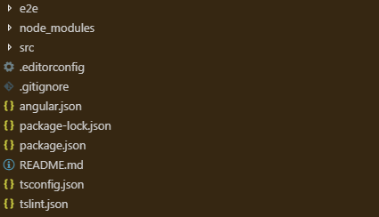Here's the src floder structure:
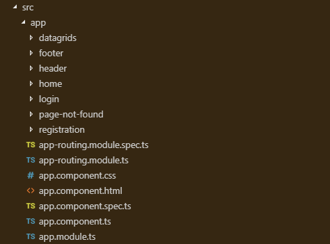Routing Module : Services : 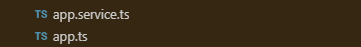 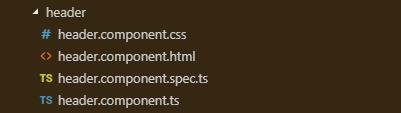 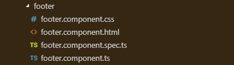
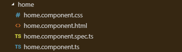 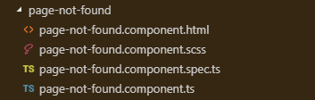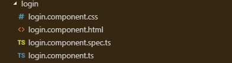 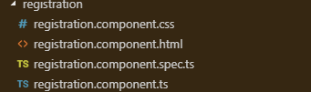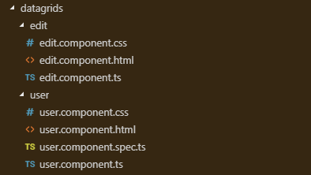 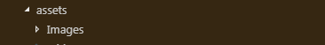
Create simple REST API with expressJS
- Before we proceed, we must ensure that we have installed node.js in our computer.
To check if you have Node.js installed, run this command in your terminal:node -v
To confirm that you have npm installed, you can run this command in your terminal:npm -v
Suppose we wanted to create our project directory in D: drive within the folder named simpleapi we need to run this command in your visual studio code terminal.
> D: // Go to D: drive > mkdir simpleapi // create a folder > cd simpleapi // Go to folder > npm init // Initiate a new NPM project > npm install express --save // use ExpressJs nodeJs framework to create our API > npm install body-parser --save //Parses incoming request bodiesNow we need to create our API entry pointapp.js, and also our route fileroutes.js

app.js
var express = require("express"); // calling our installed modules and assigning them to variable express var bodyParser = require("body-parser"); // calling our installed modules and assigning them to variable bodyParser var routes = require("./routes/routes.js"); var app = express(); app.use(bodyParser.json()); // express to accept JSON values app.use(bodyParser.urlencoded({ extended: true })); // express to accept url encoded values routes(app); var server = app.listen(3000, function () { // define port where our server should be running on console.log("app running on port.", server.address().port); }); routes.js
Now we can run our API by typing node app.js in the terminal, you should get something like this printed on your terminal app running on port. 3000. Now type visit http://localhost:3000 and see it print the welcome messagevar appRouter = function (app) { app.get("/", function(req, res) { // Get request res.status(200).send("Welcome to our restful API"); }); } module.exports = appRouter;
Sample Project ScreenShots

Creating a Repository
Step 1: In the upper-right corner of GitHub home page, click + , and then click New repository.
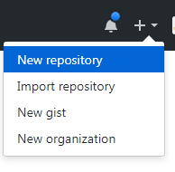
Step 2: In the Owner drop-down, select the account you wish to create the repository on and Type a name for your repository, and an optional description.
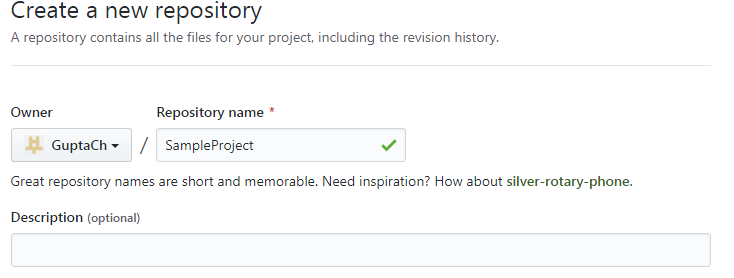
Step 3: Choose to make the repository either public or private. Public repositories are visible to the public, while private repositories are only accessible to you, and people you share them with.
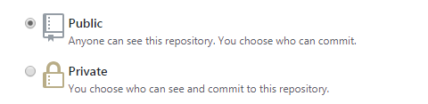
Step 4: You can create a README, which is a document describing about your project.
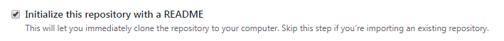
Step 5: When you're finished, click Create repository.
Cloning a Repository
Step 1: On GitHub, navigate to the main page of the repository.
Step 2: Under the repository name, click Clone or download.
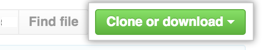
Step 3: In the Clone with HTTPs section, click to copy the clone URL for the repository.
Step 4: Open Git Bash or Visual Studio code.
Step 5: Change the current working directory to the location where you want the cloned directory to be made.
Step 6: Type
git clone, and then paste the URL you copied in Step 2.git clone https://github.com/GuptaCh/AngularSampleProject
Step 7: Press Enter. Your local clone will be created.
Running the Application:
Step 1: Run npm install
Step 2: Run ng serve
Step 3: Go to http://localhost:4200/ in your browser

Updating a Repository
Step 1: Made the necessary changes to the cloned project or local repository.
Step 2: Enter the below command in git bash to update the local repository.
git add .
Step 3: Enter the below command to Commit the files that you've updated in your local repository.
git commit -m "First commit"
Step 4: Push the changes in your local repository to GitHub.
git push